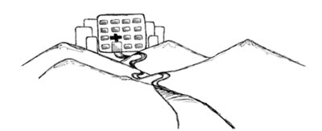

As you reach the end of this Module, you will have to come to realise just how vital your role is in providing effective postnatal care. Health Extension Practitioners (HEPs) like you not only promote the health of mothers and newborn babies in your community, but you save lives too. The postnatal care you provide is part of the continuum of maternal and child health care.
The continuum of care begins even before the women in your community become pregnant; it then continues through the antenatal care you give them during their pregnancy and the skill and support you bring to their labour and delivery. It merges seamlessly into your role in the postnatal period. Of course the continuum does not stop there: later you will study the Module on the Integrated Management of Newborn and Childhood Illness, which teaches you how to preserve and protect the health of infants and older children. So you can see this continuum as an ongoing process of giving support at all stages of from birth through to childhood, including support to their mothers.